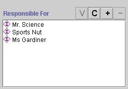

An instance with a Instance/Single slot shows an entry field and four buttons that let you edit, create, add, and remove instances. The value of this slot is a single instance:

To edit an instance:
Click the View  button
to open the Instances Form for the
instance that is displayed or selected.
button
to open the Instances Form for the
instance that is displayed or selected.
Enter the updated information directly in the Instances Form.
Any changes you enter into the Instances Form take effect immediately. Note that the instance value is a reference to the selected instance. This means that if you edit an instance in any location, the changes will appear in all the locations where it is referenced.
If no instance is currently displayed, the View button is grayed out.
To create a new instance:
Click the Create  button. The Instances Form is
displayed.
button. The Instances Form is
displayed.
Fill in the form for the new instance.
This creates a new instance as a direct instance of the class that you select. See Creating an Instance From a Field for more information.
To add an existing instance to the value of the slot:
Click the Add button. A Select Instances dialog box is displayed.
In the Allowed Classes pane, select the class where the instance you want is located.
Select a single instance in the Direct Instances pane.
Click OK. The instance you selected is shown in the display bar. If another instance was displayed previously, it has been removed.
This selects a pre-existing instance as the value of the field. This instance can also be viewed in the Direct Instances pane and may also appear as a value for other instances. Note that any edits you make to this instance will appear in all locations where this instance occurs. You should be sure that you want the change to be global before editing an existing instance. In some cases, it may be more appropriate to create a new instance instead.
To remove an instance:
Click the Remove  button. The selected instance is removed.
button. The selected instance is removed.
This removes the instance as a value of the current field, but does not remove it from the project. The instance can still be viewed via the Direct Instances pane for the correct class, and still appears in any other field where it has been selected. To delete an instance from the knowledge base, use the Delete button in the Direct Instances pane. See Deleting an Instance for more information.
An instance with a Instance/Multiple slot also shows a list with four buttons that let you edit, create, add, and remove instances. The value of this slot is a list of instances:

To edit an instance:
Click the View  button
to open the Instances Form for the
instance that is displayed or selected.
button
to open the Instances Form for the
instance that is displayed or selected.
Enter the updated information directly in the Instances Form.
Any changes you enter into the Instances Form take effect immediately. Note that the instance value is a reference to the selected instance. This means that if you edit an instance in any location, the changes will appear in all the locations where it is referenced.
To create an instance:
Click the Create  button. The Instances Form is
displayed.
button. The Instances Form is
displayed.
Fill in the form for the new instance.
See Creating an Instance From a Field for more information.
To select an instance as the value of the slot:
Click the Add button. A Select Instances dialog box is displayed.
In the Allowed Classes pane, select the class where the instance(s) you want are located.
Select the instance(s) you want to add. You can select multiple instances by holding down the Ctrl key as you click.
Click OK. The instance(s) you selected are shown in the display bar.
To remove an instance:
Highlight the instance(s) you want to remove.
Click the Remove  button. The selected values are removed.
button. The selected values are removed.
Next: The Integer Fields